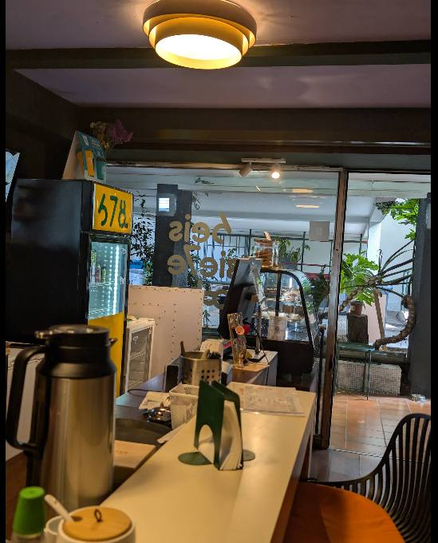
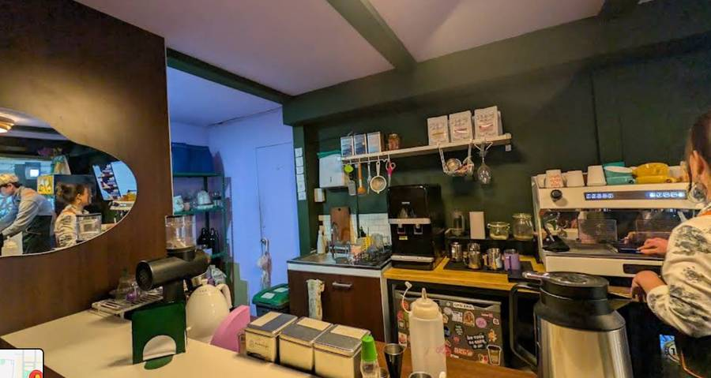
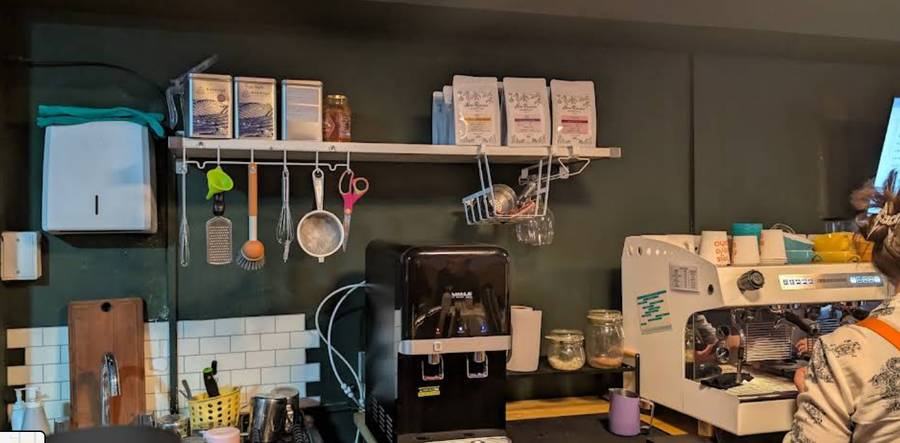
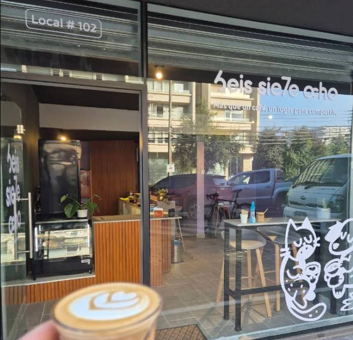
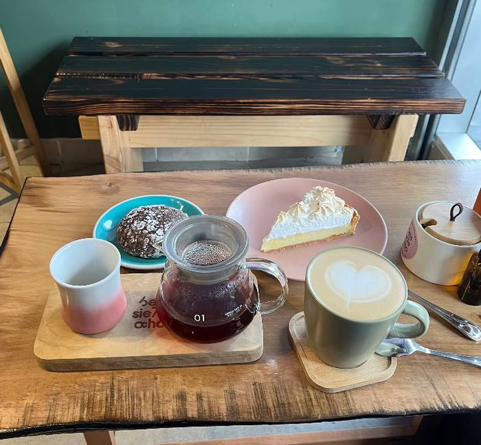
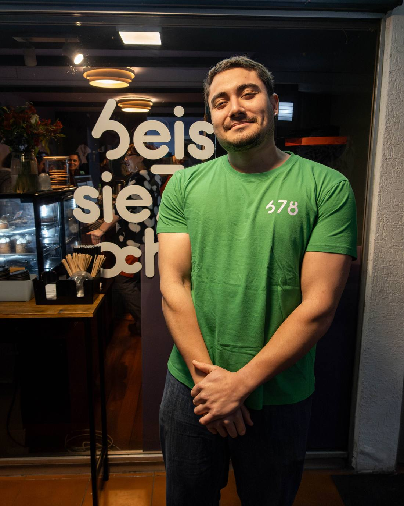

Av. Irarrázaval 3601 · Edificio Acuario · Ñuñoa
6eis sie7e ocho
Somos tres hermanos que vivimos por el café.
Cafetería de especialidad en el corazón de Ñuñoa. Café de autor, latte art hecho a mano y bebidas que cambian con la estación.
Los tres números que nos dan nombre
No es azar,
es la carta.
Calidez de barrio
Muros verde profundo, madera cálida y un mesón donde te conocen por tu pedido. Para quedarse a conversar o llevártelo al paso.
Temporada real
Navegado en invierno, hojicha con mandarina, sopaipilla en formato bebida. La carta especial cambia — nunca es genérica.
Café con oficio
Espresso doble como base de toda la carta. Latte art cuidado, tueste seleccionado, cero atajos.
Historia
La cuenta
regresiva del café.
Seis, siete, ocho no es una fórmula: es la cuenta que hacemos antes de que salga cada pedido bien hecho. Nacimos en un local pequeño del Edificio Acuario, en pleno Irarrázaval, con la idea de que el café de especialidad no tiene por qué sentirse solemne.
Cada número tiene su propia bebida — y cada bebida, una razón de estación. El resto de la carta se apoya siempre en lo mismo: espresso doble, buena leche texturizada y ningún atajo.
Santiago


Temuco


Nuestra gente
Tres hermanos,
tres números.
Nati nació un día 6, Nico un día 7 y Benja un día 8 — de mayor a menor, ese orden le dio nombre al proyecto familiar que hoy es Seis Siete Ocho.

Benjamín Princic
Benja llegó al café casi de casualidad, mientras su hermana Nati daba forma a la idea de abrir una cafetería. Sin experiencia previa en café de especialidad, se sumó a un curso de barista junto a sus hermanos y, con el tiempo, encontró en la barra un espacio para experimentar, aprender y construir vínculos con los clientes habituales.
Ese camino lo llevó a competir en categoría barista a nivel nacional, donde obtuvo el cuarto lugar en su primera participación. Hoy se prepara para volver a competir, esta vez junto a su equipo.
"Uno nunca se siente listo del todo — en algún momento hay que tomar el riesgo."
Historia recogida a partir de una entrevista publicada por Coffeedatos (Pamela Avilés) a Cafetería Seis Siete Ocho.
La carta
Todo en base a
espresso doble.
@seis.siete.ocho
189 publicaciones · 12,2 mil seguidores · 907 seguidos
Café de especialidad | Al Paso
Somos 3 hermanos que viven por el café 💗
Visítanos
Edificio Acuario,
Irarrázaval.
Av. Irarrázaval 3601, Local 4
Ñuñoa, Región Metropolitana
Consumo en el lugar ✓ · Para llevar ✓ · Despacho a domicilio ✗
Instagram: @seis.siete.ocho · 12,2 mil seguidores